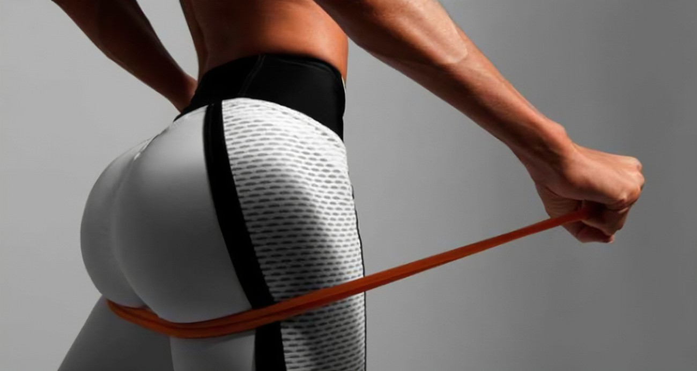

Conheça os nossos procedimentos!
Toxina Botulinica

A Toxina Botulínica é uma neurotoxina derivada da bactéria Clostridium botulinum. Este composto notável é amplamente reconhecido por sua capacidade de induzir um relaxamento temporário dos músculos, sendo amplamente utilizado em procedimentos estéticos para atenuar rugas faciais e linhas de expressão.
Harmonização de Glúteo
A harmonização de glúteo é um procedimento estético que visa melhorar a aparência e simetria dos glúteos, promovendo um contorno mais atraente e natural. Diferentemente de procedimentos cirúrgicos mais invasivos, como o aumento de glúteos com implantes ou enxertos de gordura.